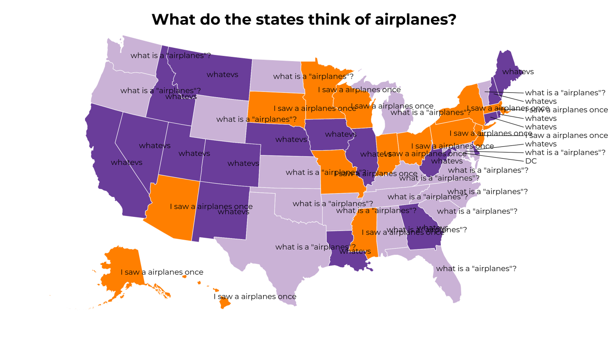
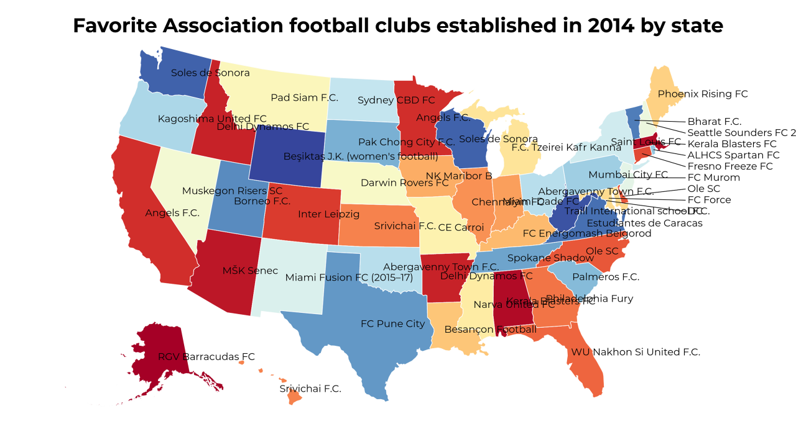
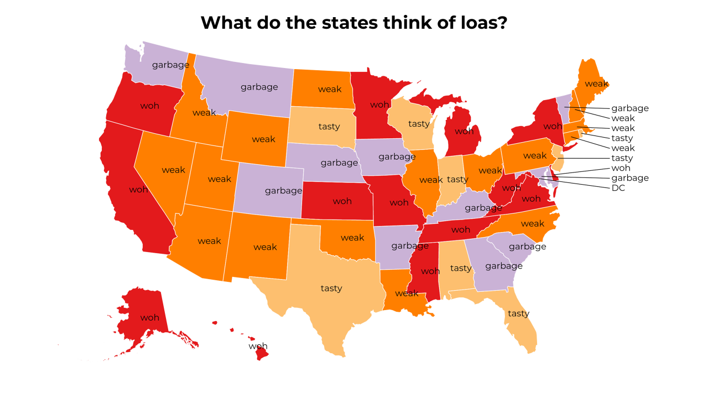
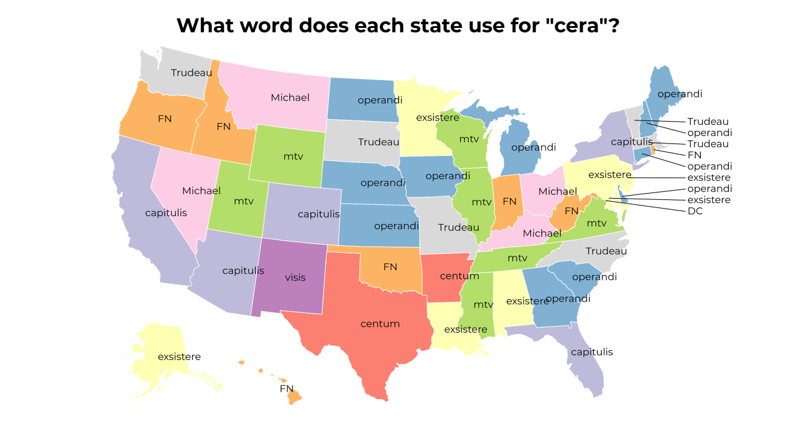
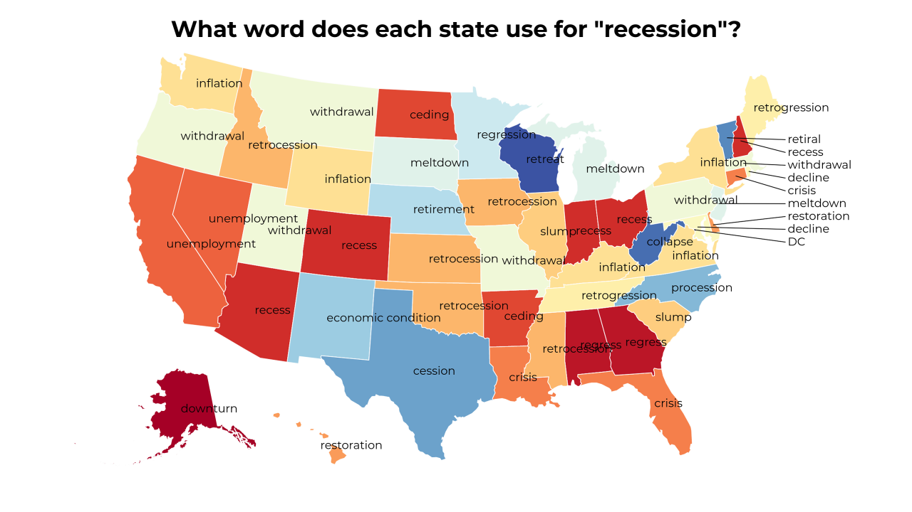
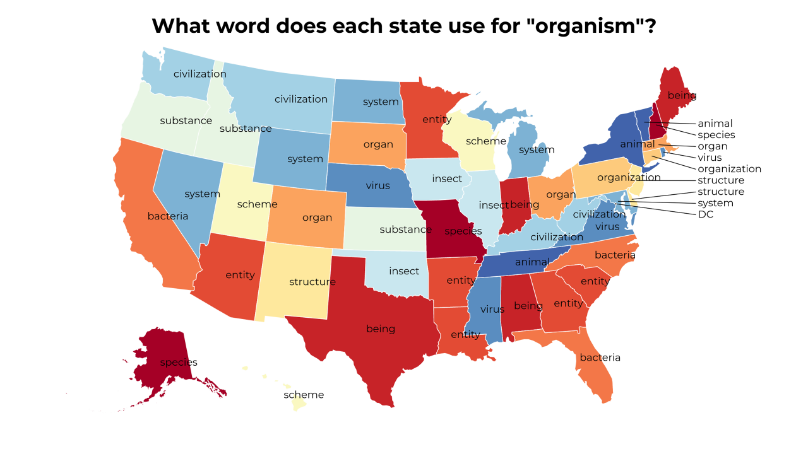
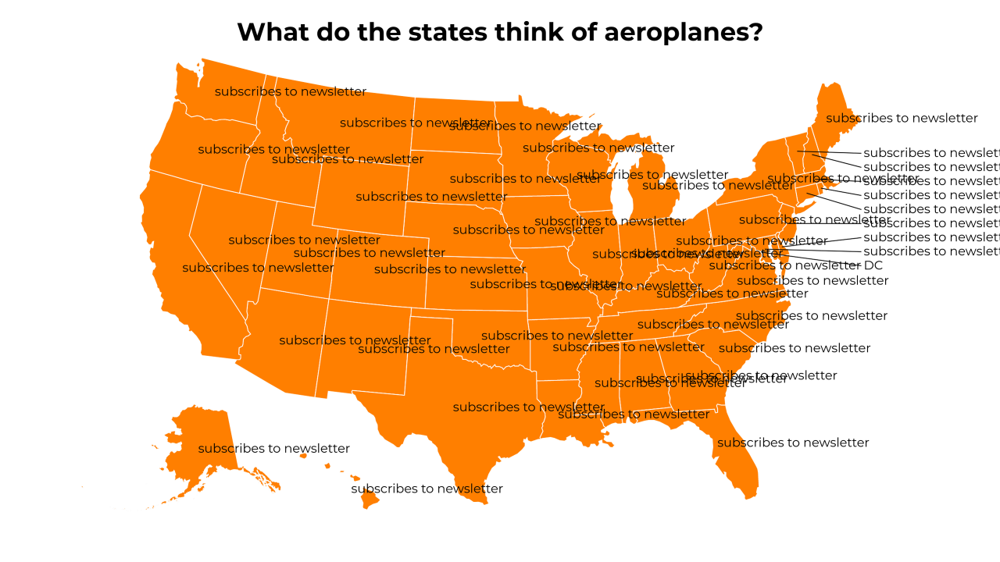
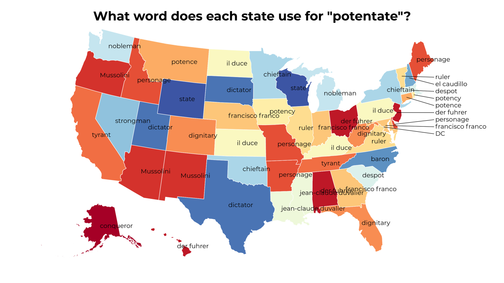

-
What do the states think of airplanes?
-
 What do the states think of chromatins?
What do the states think of chromatins? -
Favorite Association football clubs established in 2014 by state
-
What do the states think of loas?
-
What word does each state use for "cera"?
-
What word does each state use for "recession"?
-
 What do the states think of destocking?
What do the states think of destocking? -
What word does each state use for "organism"?
-
What do the states think of aeroplanes?
-
What word does each state use for "potentate"?